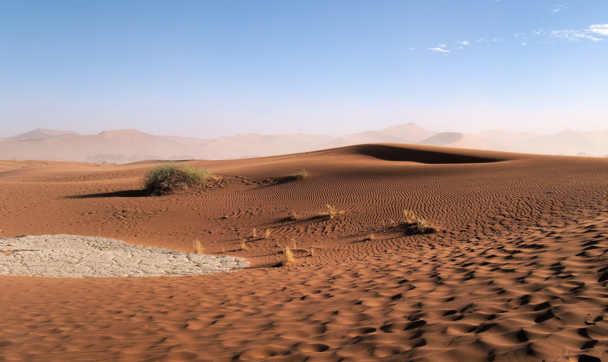
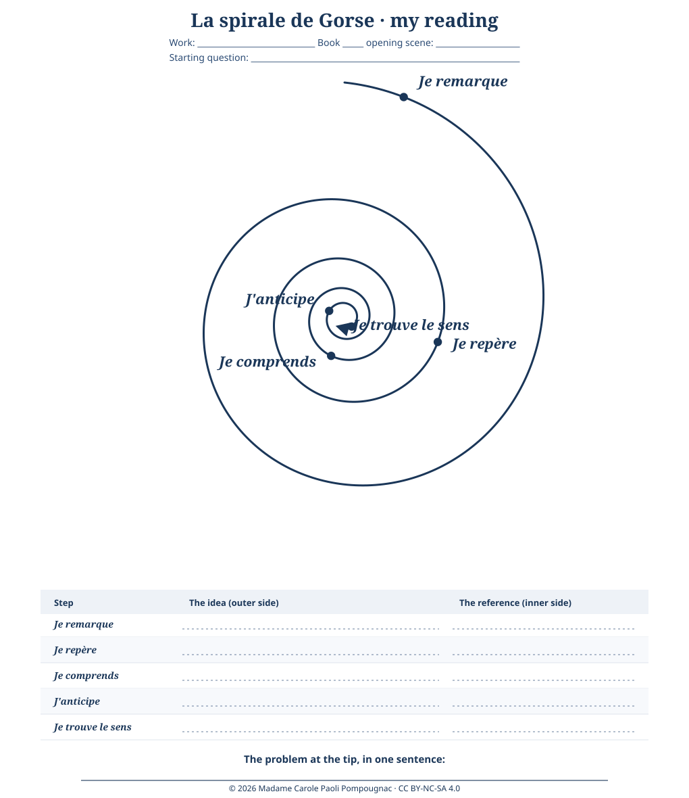

Anglais · Première technologique · lycée général et technologique · LVA and LVB · B1-B2 · Lesson 8 of 8
Lesson 8. The Council of the Deep Desert
Step of the problématique: the tip. The class answers the question: When a desert, a resource and a prophecy make a hero, is the hero the voice of a people or the instrument of those who wrote his legend, and who pays the price?
This lesson is the final task and the summative assessment, out of 20 (briefing EOC 6, interaction EOI 4, written statement EE 6, language 4).
Timing (55 minutes, timed on 52)
| Stage | Time | Activity | Skill |
|---|---|---|---|
| 1 | 4 min | Instructions; roles are drawn. | |
| 2 | 30 min | The council: briefings (3 to 4 minutes), then one or two questions. The class may work in two halves if it is large; leftover briefings continue if needed. | EOC, EOI |
| 3 | 15 min | Written statement, final version. | EE |
| 4 | 3 min | The self-correction grid is begun. |
Stopping point
After stage 2. The written statement can be finished in a following hour if the council runs over.
Emergency exit
The written statement only, today; the briefings in the next lesson.

The situation
After the end of the novel, the Fremen elders of a sietch meet. You are an adviser. Choose one role:
- a Fremen elder;
- a planetologist trained by Kynes;
- a Fremen woman who knew Paul as Usul;
- a sceptical young fighter.
You give a briefing: should the Fremen keep following Muad'Dib? Then you write a statement, to be kept in the sietch's records: 180 to 250 words (B1: 150 to 180).
This is not a dystopia opening page, and it is not a warning speech on the Orwell model. It is a council deliberation, inside the fiction, with a decision to take.
Requirements. Answer the problématique. Quote at least two short lines from Q1 to Q9. Use at least one conditional, one passive, and one concession.
Briefing structure (both levels): Introduction (who I am, my question) / Point 1 / Point 2 / Counter-argument (B2) / Decision / Thank you.
Guided B1 model (you may use these seven boxes)
- Elders, I am a Fremen woman. I knew Muad'Dib when he was only Usul. (Who are you?)
- He helped us to win, and our enemies were defeated. (What is positive? Use a passive.)
- But the legend was written by strangers before he came. (Problem one. Use a passive.)
- Although he is brave, he speaks for us, and we do not speak any more. (Problem two. Use a concession.)
- Kynes's father said we must not "fall into the hands of a Hero". (A quotation.)
- If we follow him everywhere, many young Fremen will die, and the plan to make water will stop. (A consequence. Use a conditional.)
- So I think we must thank him, but the council must decide. (Your decision.)
The dys version of the final task uses the same seven boxes, one sentence per box.
A B2 model statement (read after you have written yours, or at the teacher's invitation)
Elders of the sietch, I was trained by the planetologist, and I speak for the desert. Muad'Dib has given us victory, and I do not deny it. Our enemies have been defeated, and the spice is in our hands. Yet I ask you: in whose hands, exactly? The legend we sang was planted long ago by strangers, and the man who fulfilled it has learnt to speak our words better than we do. When he told the Guild that "the power to destroy a thing is the absolute control over it", he spoke of our planet as a weapon. Kynes's father warned us that no disaster could be more terrible than to "fall into the hands of a Hero". Although Muad'Dib loves us, a people that hands its voice to one man may never take it back. If we follow him across the stars, our sons will die far from the sand, and the slow plan to bring water to Dune will be forgotten. I propose that we honour him, but that the council, not the prophet, decides the future of the desert. The highest function of ecology is understanding consequences; let it be ours too.
This is a model, not the only right answer. Another reasoned decision, well supported, is equally welcome.
Teacher grid (out of 20)
| Criterion | B1 | B2 |
|---|---|---|
| EOC: structure and content (6) | Three minutes; introduction, two points, conclusion; two quotations. | Four minutes; a clear thesis; three points including a counter-argument; three quotations, commented. |
| EOI (4) | Answers a simple question; asks for repetition if needed. | Defends and nuances; reacts to objections; rephrases. |
| EE: argument (6) | A position stated, reasons, one example from the novel. | A position nuanced, a concession, two references, a link to today. |
| Language: vocabulary reused | Six to eight sequence words. | Ten or more, used precisely. |
| Language: accurate syntax (4, with vocabulary) | Modals, relatives, conditionals generally correct. | Passive, conditionals, concession and comparison accurate. |
Self-correction grid
The same structure as in Lesson 5: What I did / What I missed / My improved version. After the lesson, rewrite your conclusion and one paragraph, following the teacher grid.
Expected answers at two levels, and common errors
B1. "Paul helps the Fremen to win, but the legend was written by others, so the Fremen do not decide. A hero can be dangerous."
B2. "Paul is both the voice of the Fremen and the instrument of a legend planted by the Bene Gesserit and written by Irulan. His victory gives the Fremen power but takes away their voice and threatens Kynes's long ecological plan; the price is paid by the Fremen and by the desert."
Common errors, and how to redirect.
- "Paul is a good hero, end of story": ask who wrote the prophecy before he arrived (Q4).
- Confusing the film and the novel ("the spice must flow"): that line is from the 1984 film, not from the book.
- Which for people; would in the if-clause; more good: point to the grammar box of the relevant lesson.
- Using the passive without asking who is hidden: ask "by whom?" each time.
- Turning the council into a summary of the plot: ask "what do you propose?"
Optional short bridge, if useful at the end: in Orwell, the Party controls the past; in Dune, whoever controls the spice also controls the story of the planet (Q8). Who tells the story of a vital resource? This remains a question, not a second course. Fictions et réalités is an axis of the Terminale programme; this Première sequence prepares that later work.
A later companion, in Lettres: Barjavel
A French sequence on René Barjavel's Ravage (1943), for the same Première technologique students, will take up three bridges, which are not developed in this English course:
- The dependence of a technical civilisation: the empire cannot travel without the spice; in Ravage, the disappearance of electricity makes modern life collapse. A civilisation is as fragile as the resource it cannot live without.
- The guide of a people in a hostile world: Paul leads the Fremen; François leads a group of survivors and founds a new order. What does the guide ask in return for survival?
- The land that remakes its inhabitants: the desert produces the Fremen; the country after the catastrophe produces new rules. Is the environment a teacher or a tyrant?
